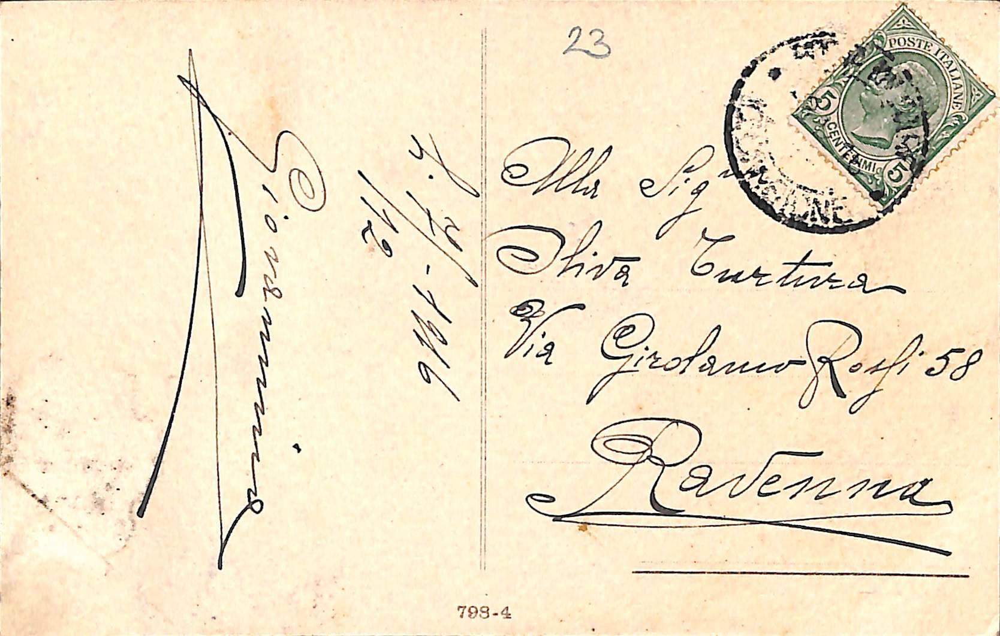
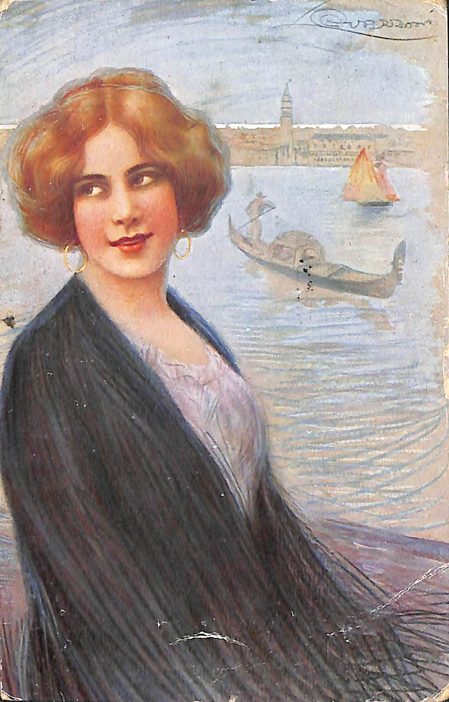
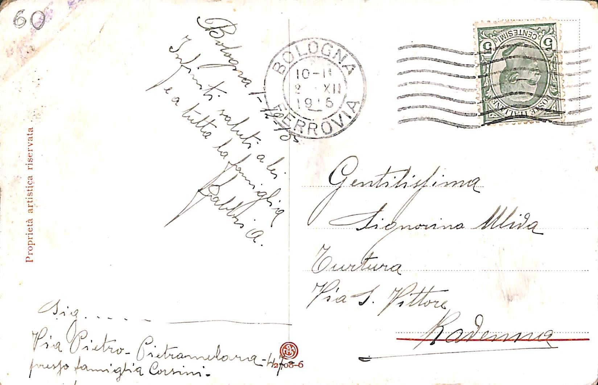
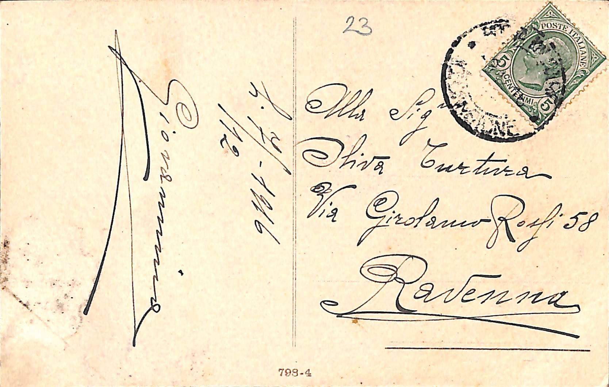
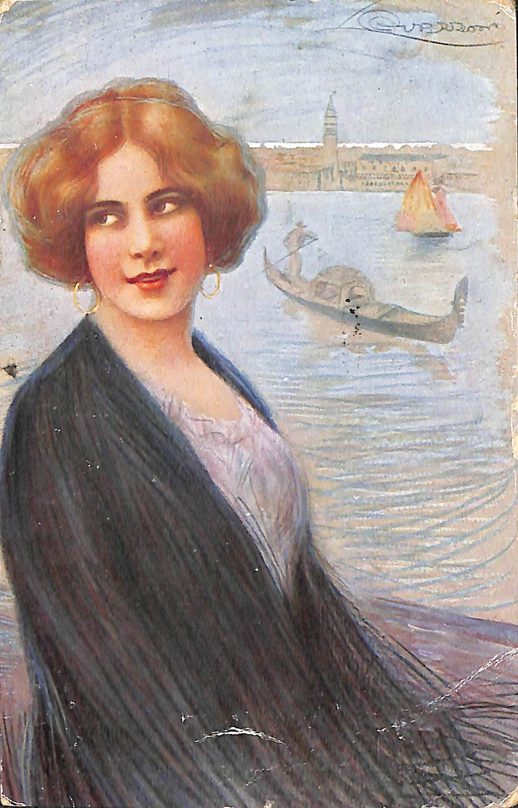
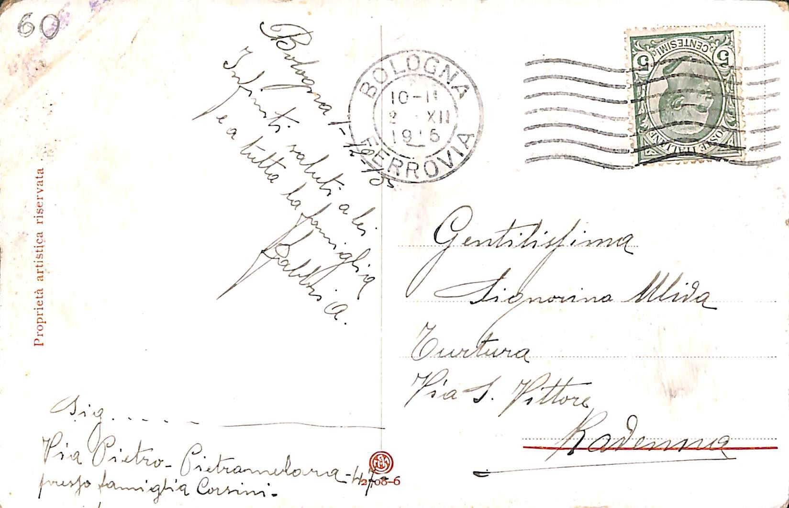

Descrizione immagine: Donna e bambino (amorino) e lettere d'amore
Retro
li7/12/1916
Giovannino
scritture dentro al timbro
francobollo poste italiane - 5 centesimi
G.ma
Gentiissima
Sig.na
Signorina
Olivia Turtura
Via Girolamo Rossi 58
Ravenna
23
Numero identificativo della cartolina all'interno del catalogo in cui è raccolto
Riga che dovrebbe separare la parte riservata al messaggio e quella relativa all'indirizzo di destinazione. Stampata dal produttore
della cartolina.
798-4
Nuemro progressivo nella stampa della cartolina
Descrizione immagine: Donna in posa con Venezia sullo sfondo
Note: In alto a destra è presente una scritta non leggibile, è possibile che sia la firma dell'autore della cartolina.
Retro
Bologna1-12-15
Infiniti saluti a lei
e a tutta la famiglia
Fabbris A.
Sig.
Signori
Via Pietro Pietramellara - n 7
presso famiglia Corsini.
Timbro di convalida del francobollo
poste italiane - 5 centesimi
Bologna ferrovia
10-11-12 XII 1915
Gentilissima
Signorina Oliva
Turtura
Via S. Vittore
Ravenna
2708-6
elemento tipografico aggiunto in fase di stampa
60
Codice identificativo della cartolina, aggiunto in una fase successiva o di catalogazione
Proprietà artistica riservata
Nota aggiunta in fase di stampa per indicare la proprietà artistica riservata della cartolina
 
